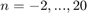

Práctica 03: Señales en tiempo discreto
Intituto Politécnico Nacional
Unidad Profesional Interdisciplinaria en Ingeniería y Tecnologías Avanzadas
Análisis de Señales y Sistemas
Grupo: 2MV1
Alumnos:
- Carmona Bellido Marco Tulio
- Ordorica Muñoz Leonardo Antonio
Contents
Introducción
Al trabajar con señales en tiempo discreto se complica un poco al momento de realizar operaciones con dichas señales, debido a que estan definidas solo para numeros enteros. Por lo tanto al realizar un escalamiento horizontal, si este queda definido para un numero decimal, se perderian los datos que quedaban contenidos en esos puntos.
Lo que se hace es quedarnos con los enteros definidos en el intervalo despues de realizar el escalamiento.
Si la operación realizada es una compresión y se pierden datos de los extremos, se llama Decimation.
Si la operación realizada es una expansión se a la perdida de datos se le llama Interpolation.
A los puntos donde pudieran faltar esos datos se les puede considerar que son cero, que no estan definidos o se le puede hacer una interpolación.
La interpolación consiste en tomar la altura anterior al punto más la altura siguiente al punto y dividir esa suma entre 2. Asi se estaría definiendo esa altura con ese valor.
Por ejemplo:
La función definida por:
Con gráfica:
Al aplicarle un escalamiento horizontal de la forma f[2n] la funcion queda definida asi:

Como podemos observar queda definido para numeros decimales pero las señales en tiempo discreto solo estan definidas para numeros enteros por lo que solo se consideran los enteros dentro de esos intervalos, asi que la grafica de la señal quedaria asi:
Cabe destacar que en este ejemplo se consideraron las alturas que no estaban definidas como ceros.
Con eso se ejemplifican los problemas que se tienen al realizar un escalamiento horizontal en señales en tiempo discreto.
Objetivos
- Manipulación básica de MATLAB
- Gráficas de señales reales y complejas discretas
- Transformación de señales discretas (escalamientos y traslaciones)
- Calculo de energía y potencia de señales discretas
Desarrollo
Problema 1
Se crea una funcion la funcion la llamaremos fun1 y regreseara la evaluación de , para que se pueda ejecutar se le tendra que enviar el valor de r y de asi como el funto en que se desea evaliar la funcion que en este caso será .
function [a] = fun1(r,w,n0) f = @(n) (r.^n).*cos(w.*n) + (r.^n).*sin(w.*n)*i; a = f(n0); end
Problema 2
A continuacuón crearemos una funcion de matlab fun2 que grafique en tiempo discreto la siguiente función para y con . A la funcion solo se le enviaran los parametros pues estara previamente definida para evaluar la funcion antes mensionada.
n = -2:10; a = 0.9; fun2(n,a)
Problema 3
Ahora crearemos una funcion fun3 que va de la funcion evaluada sera la descrita en el problema 1 para cual se tomaran los siguientes valores , y .
Tambien se mostraran sus graficas de espectro de fase y magnitud.
r = 1.1; w = 0.5; n = -2:20; fun3(n,fun1(r,w,n))
Problema 4
Funcion que calcula la energia de una señal discreta pasandole como parámetros un vector de tiempo y las alturas asignadas a cada entero del vector de tiempo e imprime la gráfica de la señal.
function [ex] = energiadis(tiempo,alturas) % La funcion energia pide un limite inferior y un limite superior ex=sum(alturas.*alturas); % Se usa la funcion sum para sumar todas las alturas de la señal stem(tiempo,alturas) xlabel('n'); ylabel('x[n]'); grid on; title('Gráfica de la señal ingresada'); axis([min(tiempo)-2 max(tiempo)+2 min(alturas)-2 max(alturas)+2]); ax = gca; ax.XAxisLocation = 'origin'; ax.YAxisLocation = 'origin'; end
Problema 5
Resuelva el problema 3.1.1 c) de Lathi, aplicando su función anterior El inciso c) del problema 3.1.1 de Lathi tiene una señal definida de -3 a 3, para todas los demas enteros es cero.
A esos tiempos le corresponden las alturas definidas por la función x[n]=3n;
A continuación se utiliza la función energiadis con esos datos:
n=-3:3; x=3*n; energiadis(n,x)
ans = 252
Como podemos observar la función energiadis trabaja adecuadamente.
Problema 6
Se tiene la señal ilustrada a continuacion:
La señal anterior la podemos expresar matematicamente como:
![$x[n] = n$](P3_eq06058396780181635806.png) para y para .
para y para .
En matlab la describiremos como:
Se busca graficar:
- .
- .
- .
- .
- .
- .
Para poder graficar todas las funciones anteriores se definira una de , asi todas las funciones podrn ser mostradas dentro del mismo dominio.
Primero definimos la funcion y los valores de &n&.
n = -10:20; M = [-1,0; 1,6; 1,-6; 3,0; 1/3,0; -1,3]; x = @(n) n.*(n>=0).*(n<=3) + (-n+6).*(n>3).*(n<=6);
Notoce que se incluyo una matriz "M" cuya informacion el el termino que multiplica a y el termino que se suma.
Ahora procedemos a graficar cada una de las funciones enumeradas anteriormente.
for i = 1:6 figure stem(n,x(n*M(i,1) + M(i,2))) title(i) end
Referencias
- Martínez R.,Senales y Sistemas: Una perspectiva. Recuperado 19 marzo, 2019, de <http://rafneta.github.io>
- Lathi, B. P.. (2005). Linear Systems and Signals. New York: Oxford University Press, Inc.
- Martínez, R. [Mate y así]. (2018 Agosto 17). Escalamiento horizontal de señales en tiempo discreto (6) [Video]. Recuperado de https://www.youtube.com/watch?v=lpFU5D7oY1w